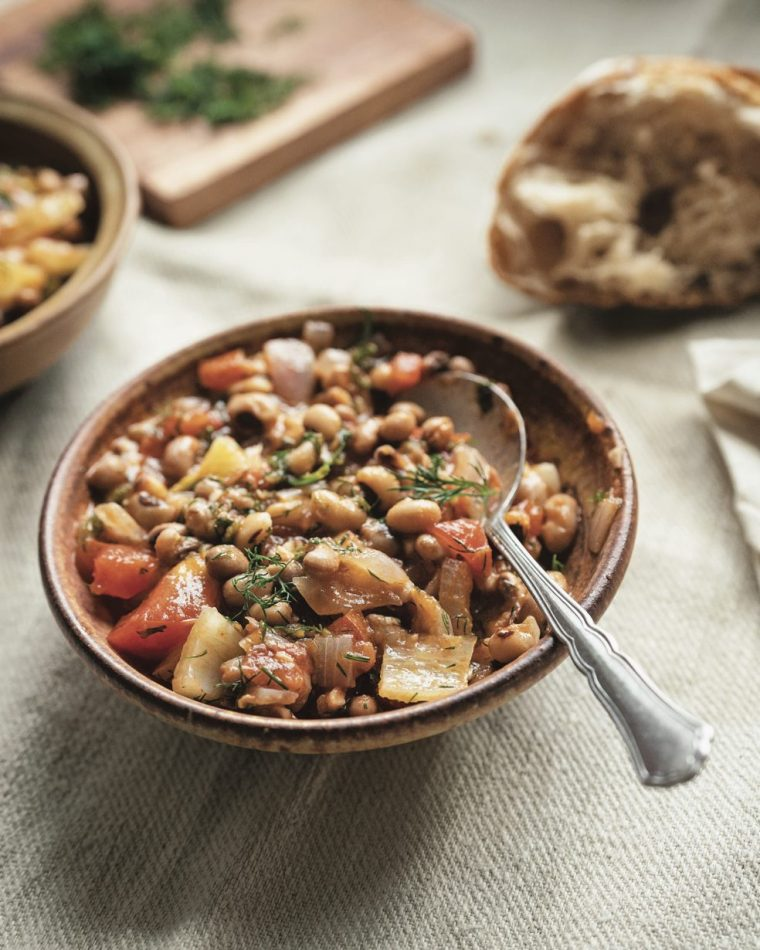

Ikarian Stew

Description
An amazing stew based on the diet of the people from Ikaria.
Ingredients:
- 8oz can of black-eyed peas
- 1/2cup EVOO
- 1 large red onion
- 4 cloves garlic
- 1 fennel bulb
- 1 large ripe tomato
- 2 tsp tomato paste
- 2 bay leaves
- 1 bunch of dill chopped
- salt
Steps:
- Heat olive oil over medium heat and cook onion, garlic, and fennel
- Add black-eyed peas and stir
- Add tomato, tomato paste, and water to cover beans by 1"
- Add bay leaves
- Bring pot to a boil and simmer 10 minutes
- Add chopped dill and salt to taste
- Cook another 20 minutes
- Remove from heat and discard bay leaves